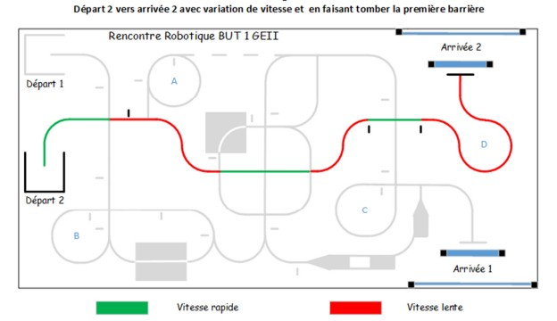
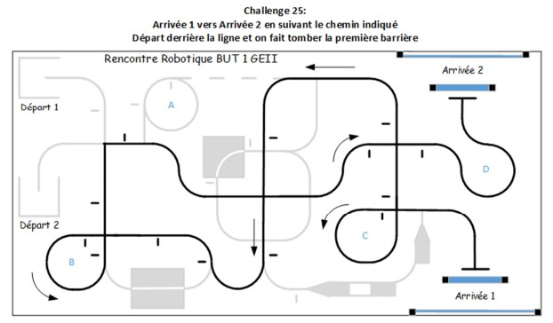
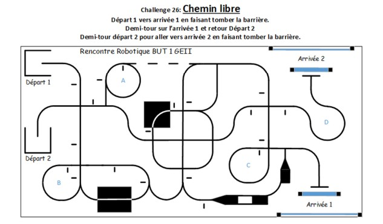

Missions 1 a 20
Base de suivi de ligne avec intersections, marqueurs, demi-tour, arret final et arrivee avec barriere.
Les epreuves demandent au robot de suivre la piste, prendre des intersections, changer de vitesse, pousser une barriere et parfois suivre des parcours plus libres.
Base de suivi de ligne avec intersections, marqueurs, demi-tour, arret final et arrivee avec barriere.
Variation de vitesse selon les reperes de piste : vitesse lente, moyenne ou rapide selon la sequence reglee.
Pause de deux secondes a chaque marqueur lateral, puis fin avec detection de barriere par ultrason.
Base prevue : quitter la ligne en fin de piste, couper vers l'arrivee et pousser la barriere.
Parcours libre avec gobelets a pousser. La strategie envisagee combine intersections, boucles et trajectoires controlees.
Les sections discontinues demandent une logique de franchissement : avancer tout droit pendant une courte perte de ligne.
Les images ci-dessous peuvent etre remplacees par les captures exactes de vos epreuves finales.


